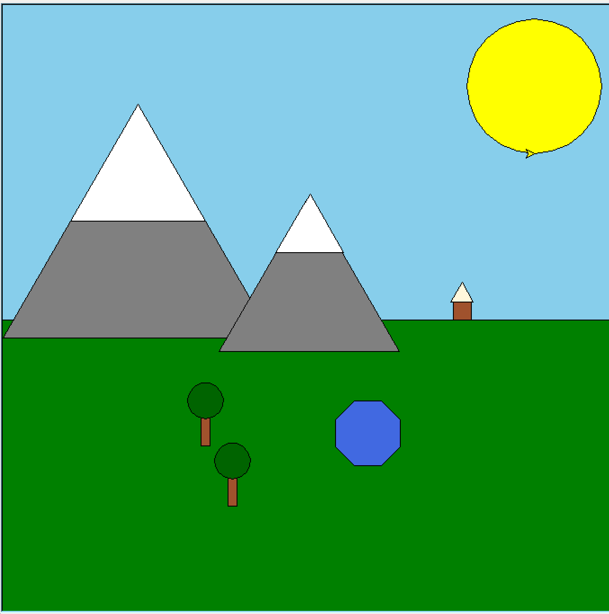
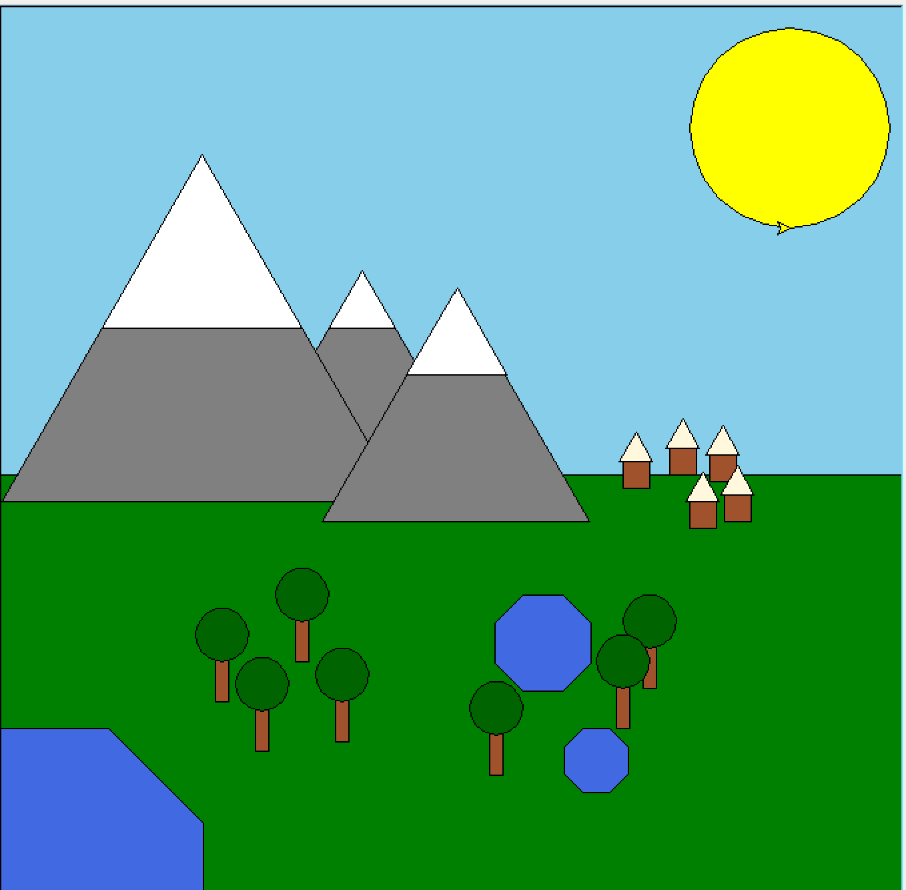

This project was created to modify and enhance a previous project, which was simply to draw a scene with Turtle's built-in functions and simple user-defined ones. Then, here, the assignment was to refactor the functions we had made to work with a wider range of data and allow inputs to modify things like size, color, and location without needing to make a new function. Then, one can use the refactored functions to make the scene way more detailed filled in much more easily than they could with the original code.


Despite adding many more elements to the drawing, the file length only increased from 180 lines to 208!